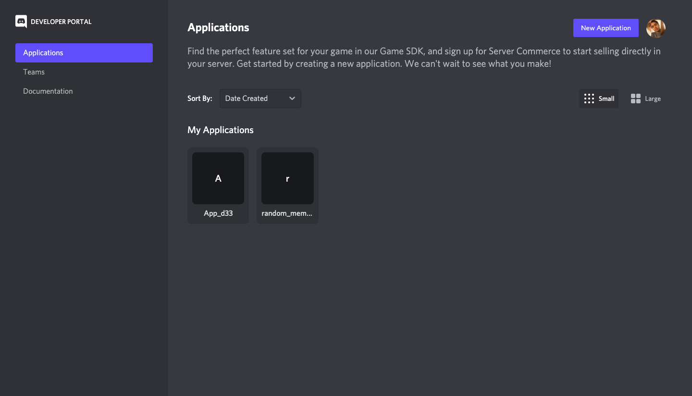
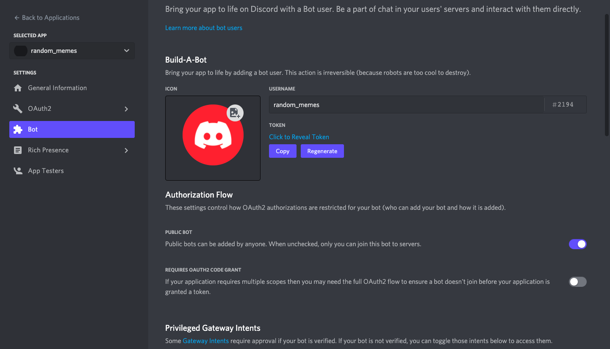
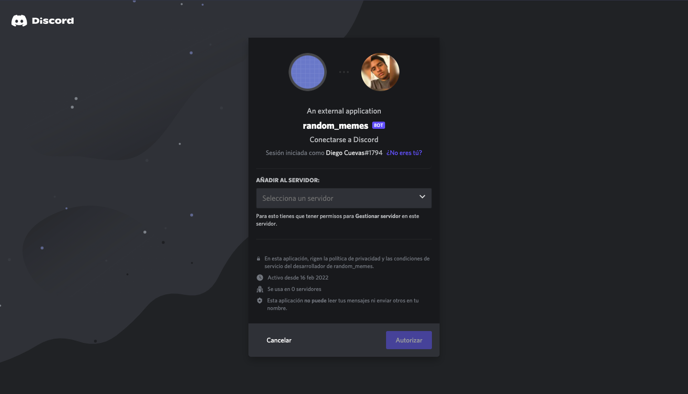
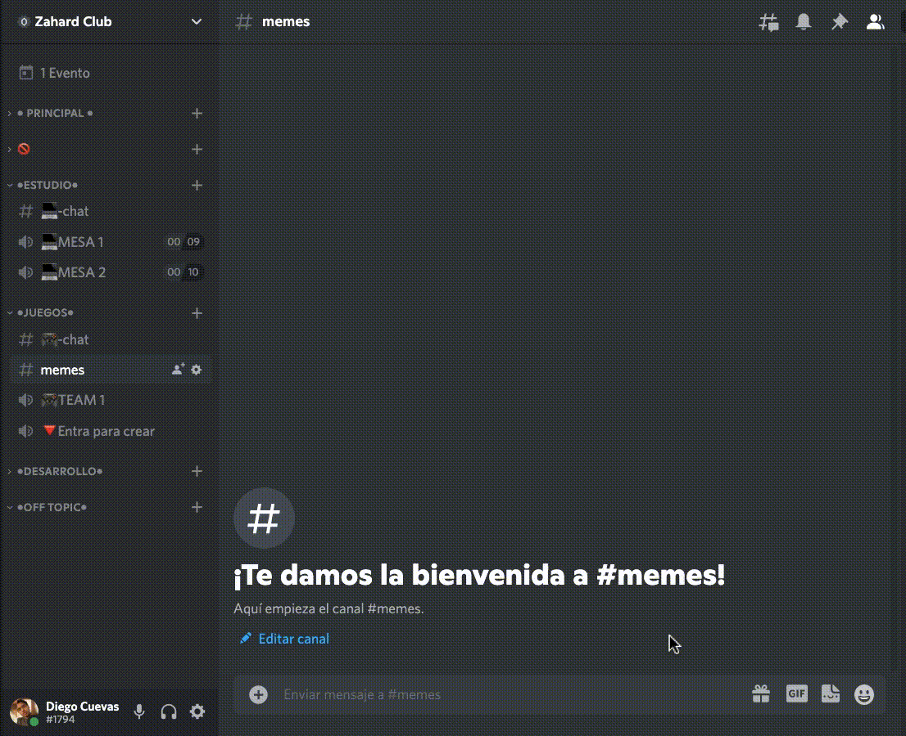

Primero debemos crear el bot en la pagina de discord.

para obtener el token del bot debemos ir a la parte settings/Bot creas el bot y guardas el token que sale abajo del username del bot.

Después debemos agregar nuestro bot a nuestro servidor de discord, para ello debemos ir a la parte OAuth2 url generator seleccionar scope Bot y entrar a la url generada.

Seleccionar el servidor que queremos y listo! ahora solo debemos hacer las funciones de nuestro bot.
Requerimientos: Ya con el token podemos empezar a codear, usaremos e instalaremos las siguentes herramientas:
Una gema de Ruby para interactuar con la API de Discord (https://www.rubydoc.info/gems/discordrb)
$ gem install discordrbNecesitarás esto para que funcione la función de voz de discordrb, a pesar de que no lo usemos la gema discordrb requiere de esto.
$ brew install libsodiumOtra biblioteca popular para audio/video requerida por discordrb para soporte de voz
$ brew install ffmpegCreamos un archivo
main.rbdonde agregamos primero losrequirede las herramientas que usaremos:
require "discordrb"
require "mechanize"
require "json"
Creando el bot
Luego con el token que nos dieron podremos inicializar para crear los comandos de nuestro bot eso seria algo asi:
bot = Discordrb::Bot.new token: 'XXXXXXXXXXXXXX'Entonces hacemos el
bot.message(with_text: ‘some key word’)para que cada vez que reconozca el key word o palabra clave entre a la funcion.
En mi caso es 'meme'
bot.message(with_text: 'meme') do |event|
Para traer la imagen usaremos mechanize que se utiliza para automatizar la interacción con los sitios web.
agent = Mechanize.newbuscamos una url que nos de images random de memes por ejemplo yo usé esta url.
link = 'https://meme-api.herokuapp.com/gimme'Hacemos un get al endpoint y parseamos la data a Json para obtener la url de la imagen.
response = JSON.parse(agent.get(link).body.to_s)Después yo hice esto, para obtener el nombre y su tipo como (“.gif”,”.png”).
name = response['url'].split('/').lastEntonces ya que tenemos la url de la imagen le hacemos un get a la url de la imagen y la guardamos con el nombre que obtenemos arriba.
agent.get(response["url"]).save nameUna vez guardada usamos el metodo “.send_file” para mandar la imagen
event.send_file(File.open(name), caption: response["title"])Despues mandar la imagen, le hacemos un sleep a nuestra funcion por dos segundos (que hace que se detenga la funcion por el tiempo dicho), hacemos el sleep para que no se elimine mientras se esta subiendo la imagen. y borramos la imagen de nuesta carpeta
sleep(2) event File.delete(name)algo asi nos quedaria la funcion:
bot.message(with_text: 'meme') do |event| agent = Mechanize.new link = 'https://meme-api.herokuapp.com/gimme' response = JSON.parse(agent.get(link).body.to_s) name = response['url'].split('/').last agent.get(response["url"]).save name event.send_file(File.open(name), caption: response["title"]) sleep(2) File.delete(name) end
finalmente mandamos un mensaje meme en nuestro servidor de discord.
